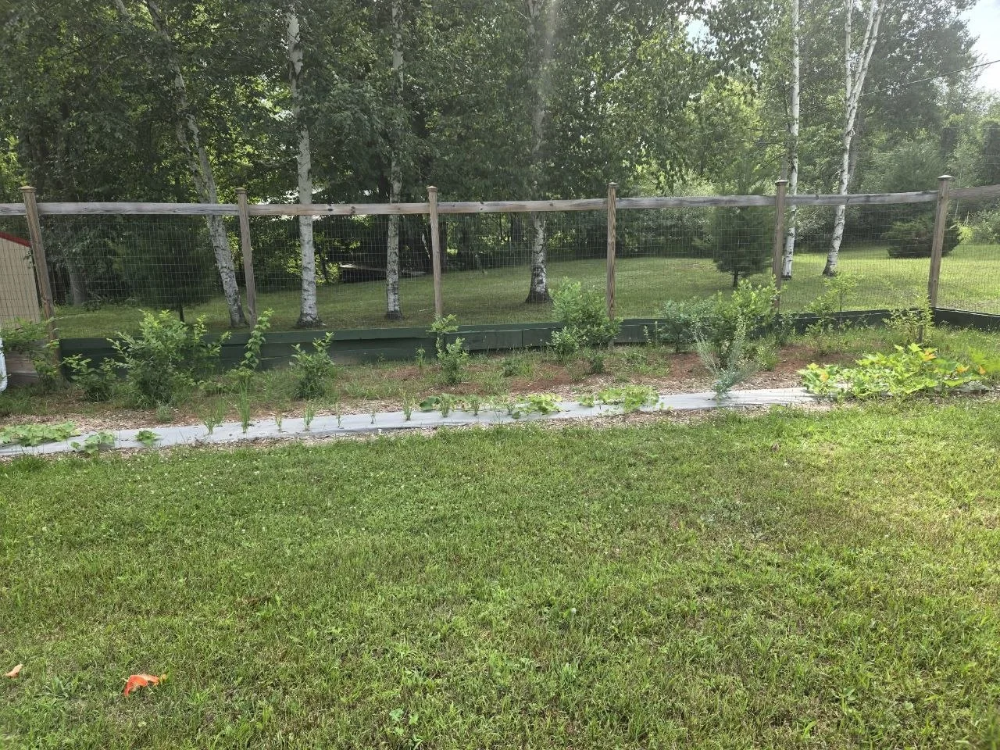
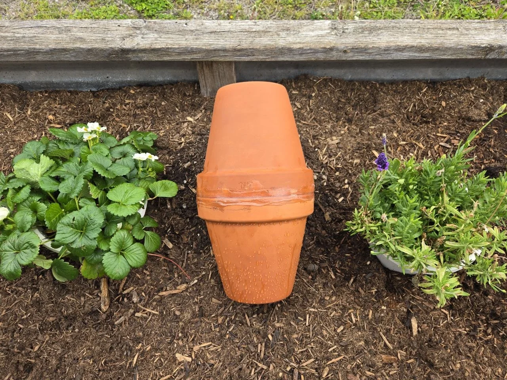
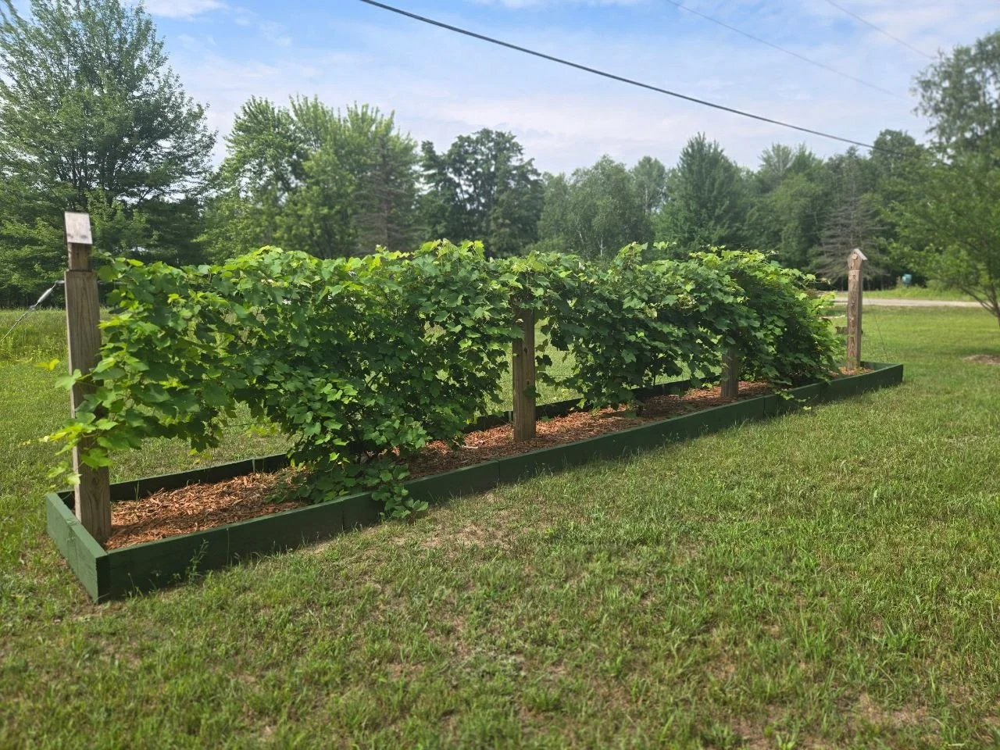
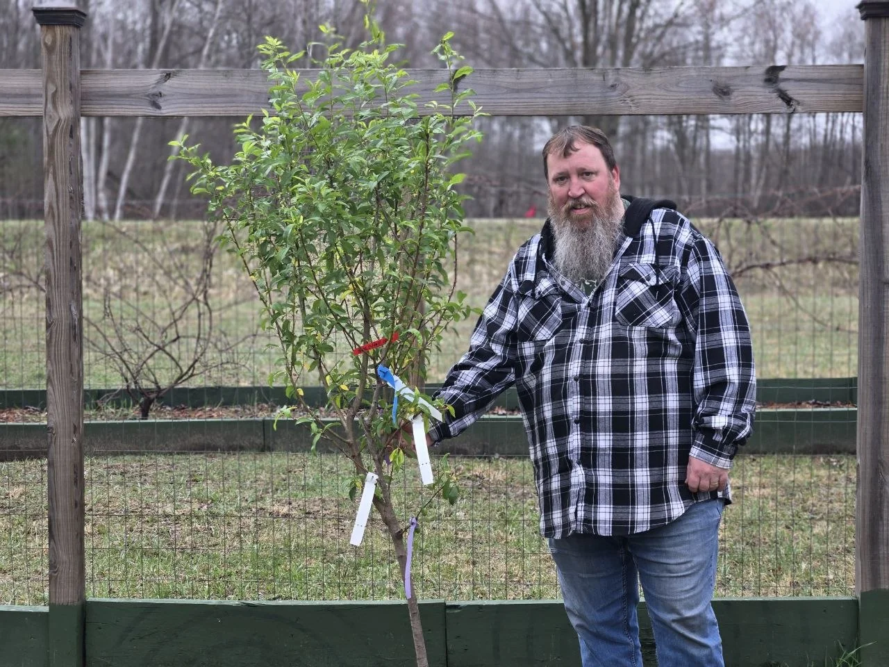
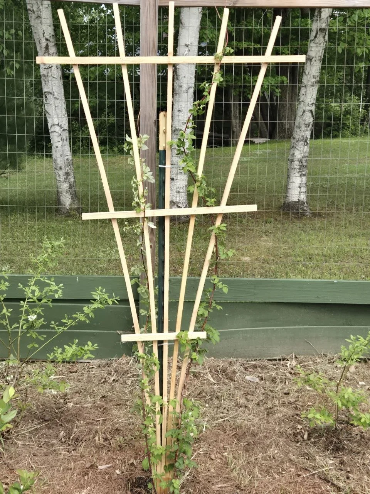
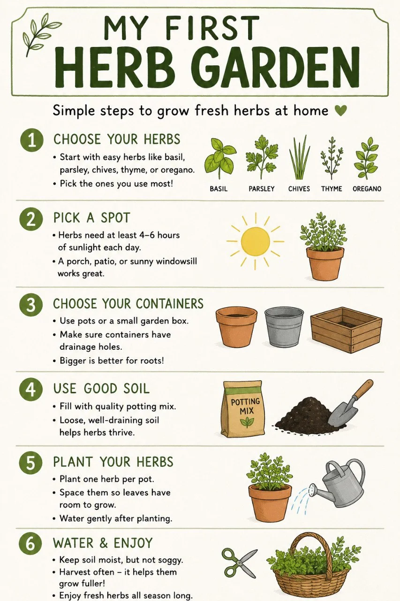

Gardening
What to Plant in a 4x8 Raised Bed
For the food you actually eat. A useful garden starts with the crops you care about.
Read the story ↗The city beds struggled while we were away. The cabin garden began with a single trial row. There are small harvests, missing grapes, new fruit trees, and another chance to try.

The beds struggled while life pulled Jeff and Vanessa toward the cabin.
The city beds did not wait for usThe olla article is still an experiment. It does not report a proven result.
A Simple Olla Watering Pot for Short Trips
The first trial vegetable row came with another water-system job.
Just one row for now
The seasonal reflection records a few vegetables and fruit, and grapes the wildlife got first.
Thousands of grapes. None left for us.
The April trip adds two jujubes and a Fruit Cocktail tree. There is no new-tree harvest to report yet.
A chilly day. Three new fruit trees.
The fan-trellis article follows the build through installation and the second trellis.
We Made This 1 Cedar Fence Picket Into a Trellis for Our Raspberry Bush
A few useful places to start with the thing you’re thinking about trying next.
For the food you actually eat. A useful garden starts with the crops you care about.
Read the story ↗
If the food you actually want to eat is lettuce, spinach, kale, cucumbers, sweet peppers, tomatoes, onions, carrots, and fresh herbs, this kind of 4x8 bed makes a lot more sense than trying to grow a random little bit of everything.
Read the story ↗
Existing QBL illustrationIf you have never grown herbs before, start here. This simple setup is easy to build, easy to maintain, and gives you herbs you will actually use.
Read the story ↗